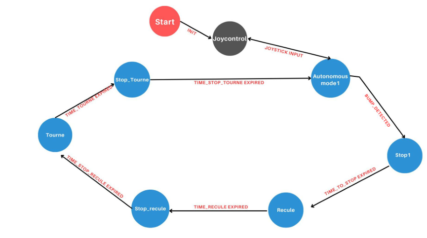
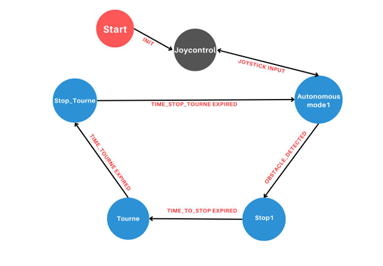

Autonomous Navigation with TurtleBot2 & ROS
In this project, we utilized the TurtleBot2 platform and the ROS system to develop an autonomous navigation system. The TurtleBot2 is equipped with various sensors, including bumpers and LIDAR, which allow it to gather real-time data about its environment. The primary objective was to design a finite state machine capable of managing the robot's behaviors based on detected obstacles.
Project Iterations
1. Obstacle Detection with Bumpers
In this phase, the robot used contact sensors (bumpers) to detect obstacles. When an obstacle was detected, the robot would reverse and change direction. This iteration validated the basic mechanisms for obstacle detection and avoidance.
2. Obstacle Avoidance with LIDAR
This phase introduced the use of LIDAR for more precise obstacle detection. The robot could detect obstacles at a greater distance and make more informed decisions to avoid them. Obstacle avoidance algorithms were developed and tested in a simulated environment.
3. Improved Obstacle Avoidance with Odometry
The final phase involved integrating odometry data to enhance navigation accuracy. The robot could better estimate its position and orientation, optimizing obstacle avoidance algorithms and making the system more robust.
Results and Conclusions
The results demonstrated a significant improvement in the robot's autonomous navigation capabilities. By integrating various sensors and optimizing algorithms, the robot could navigate more smoothly and accurately in complex environments. This project validated the finite state machine approach for autonomous navigation and paved the way for future enhancements, such as integrating additional sensors and refining decision-making algorithms.